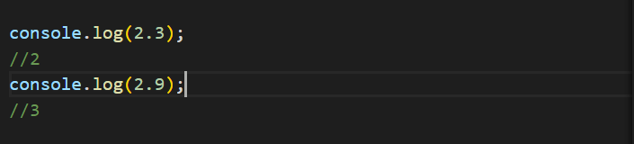
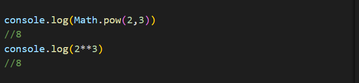
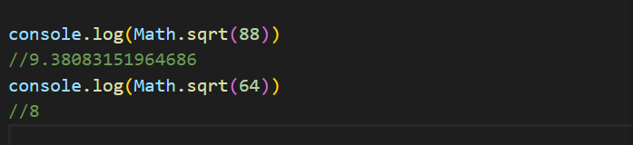
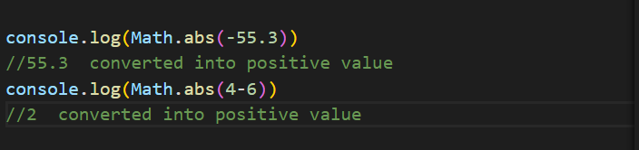
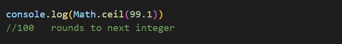
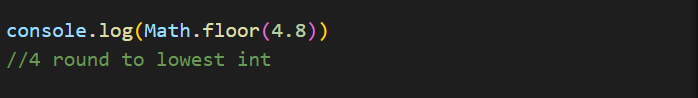
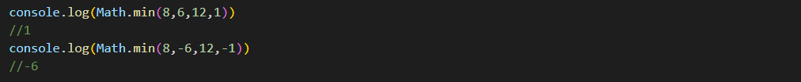
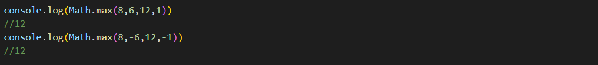
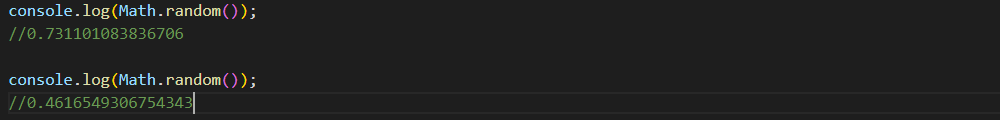
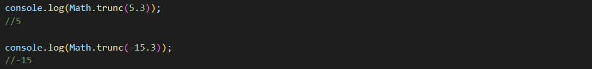

We use Math objects to perform operations on numbers
Math Object in javascript
Math.round()
Math.round() rounds the given into the nearest number. if the fraction value is greator than 0.5 then it will give output as next integer and if the fraction value is less than 0.5 it will output as nearest lower integer

Math.pow()
Math.pow() is used of exponential operations
you can either use Math.pow or "**" operator to get the appropriate answer.
In this math.pow() function the first argument is taken as a base value and the second argument is taken as exponent.

Math.sqrt()
Math.sqrt() is used to get square root of the given number.
The numbers which are not perfect square will return a floating value.

Math.abs()
Math.abs() is used to convert negaitve numbers into positive numbers.

Math.ceil()
Math.ceil() is used to convert floating numbers into next nearest integer number regardless the fractional value is greator than or less than 0.5 it will always convert that number into next nearest integer.

Math.floor()
Math.floor() is used to convert float value into nearest integer which is less than or equal to the given number.

Math.min()
Math.min() is used to get the smallest number form given inputs.

Math.max()
Math.max() is used to get the largest number form given inputs.

Math.random()
Math.random() is used to generate a random number. It gives a random float number between 0 to 1.

Math.trunc()
Math.random() is used to get the numbers before decimal point without any conversion. It removes the digits after decimal and returns the integer part regardless the number is positive or negative.
